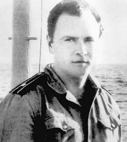

|
Дважды расстрелянный
Четверть века тому назад капитан Валерий Саблин пытался начать
"четвертую русскую революцию"
ОКТЯБРЬ БАР-БИРЮКОВ; Автор - капитан 1 ранга в отставке
В НОЧЬ с 8 на 9 ноября 1975 года на Балтийском флоте, на борту большого
противолодочного корабля (БПК) "Сторожевой", произошло событие, о котором даже
сейчас, спустя четверть века, адмиралы предпочитают говорить полушепотом. Еще
бы! Бунт на борту мощного боевого корабля - это ЧП не флотского, а
государственного масштаба. Особенно если требования восставших - политические.
Именно с этими требованиями и выступил экипаж "Сторожевого" ровно 25 лет назад.
Во главе восстания встал блестящий советский офицер, моряк в третьем поколении ,
капитан 3 ранга (по-флотски сокращенно - "кап-три") Валерий Саблин. Имя, которое
почти на четверть века было вычеркнуто из отечественной политической истории.
Даже сейчас, когда открываются архивы брежневской поры, о трагедии "советского
"Очакова" мало кто знает. Ведь еще тогда, в 1975 году, и на имя Саблина, и на
его корабль, и на информацию о невероятных событиях, развернувшихся на рейде
Риги, был наложен гриф высочайшей степени секретности. Даже материалы по делу
Саблина хранились в Кремле в "особой папке" советских генсеков.
Грязь истории
В ноябре 1975 года автору довелось быть в Риге и стать невольным свидетелем
того, как эта история начиналась. Позже мне приходилось не раз беседовать с
людьми, в той или иной степени причастными к тем событиям. И всегда мы говорили
полушепотом...
На имя Саблина за 25 лет налипло немало вымыслов, а то и самой откровенной лжи.
По версии КГБ, аккуратно запущенной во флотскую среду, суть саблинского
восстания была такова: изменник-замполит взбунтовал экипаж БПК с целью уйти в
Швецию. Проводились аналогии с историей, наделавшей много шума в конце 50-х
годов, когда командир балтийского эсминца Артамонов во время стоянки корабля в
одном из польских портов бежал вместе со своей любовницей-полькой на своем
командирском катере в Швецию. Оттуда он перебрался в Соединенные Штаты Америки,
где попросил политического убежища и выдал американцам все советские военные
тайны, что знал... Историческая аналогия сработала: версия чекистов была
воспринята в военной среде и имя Саблина долгое время было там синонимом слова
"предатель". Широкой общественности и сегодня до сих пор не известна вся правда
об этом беспрецедентном для советской истории случае, и особенно о самом Василии
Михайловиче Саблине - бесстрашном советском Дон-Кихоте... Впрочем, новые
российские власти так и не решились реабилитировать имя Саблина. Депутаты
впоследствии распущенного Верховного совета СССР провели в 1992 году
общественные слушания на эту тему. Его участники единодушно вынесли вердикт -
"не виновен!" Тем не менее военная коллегия Верховного суда РФ в 1994 году
фактически подтвердила старый приговор брежневской поры.
Замполит от Бога
Душой корабля, что, поверьте, бывало не так часто, был замполит. Именно в этой
должности на "Сторожевом" служил капитан 3 ранга Саблин. Вообще-то замполитов на
флоте традиционно не жаловали - кадровые политработники слабо знали корабельные
специальности и морское дело вообще. Валерий Саблин же был на этом фоне "белой
вороной". В 1960 году он окончил Высшее военно-морское училище имени Фрунзе
(бывший Морской корпус), получив специальность корабельного артиллериста, и
девять лет прослужил на строевых должностях на надводных кораблях Северного и
Черноморского флотов. В Военно-политическую академию им. Ленина он поступил в
1969 году с должности помощника командира сторожевого корабля. Тогда он был уже
капитан-лейтенантом.
Четыре года учебы в Москве закончились для Саблина, как это было принято
говорить в гуманитарной среде, "острым мировоззренческим кризисом". Штудируя
классиков марксизма и домарксистских философов, он пришел к выводу о том, что
нынешняя власть до неузнаваемости исказила коммунистическое учение. Именно в
академии ему пришла дерзкая мысль указать власти на ее заблуждения. Он даже
разработал подробную программу переустройства общества, состоявшую почти из
тридцати пунктов. С нею Саблин собирался публично выступить перед
общественностью и политическим руководством СССР. Кстати, именно эта программа и
позволила впоследствии Военной коллегии Верховного суда СССР признать Саблина
виновным в том, что он "длительное время вынашивал замыслы, направленные на
достижение враждебных советскому государству преступных целей: изменение
государственного и общественного строя, замена правительства..."
С чем же на самом деле собирался бороться Саблин? С некомпетентностью и
безответственностью лиц, принимающих государственные решения, с коррупцией и
непомерным восхвалением Брежнева. Он выступал за многопартийность, свободу слова
и дискуссий, изменение порядка выборов в партии и стране. Его тревожила утрата
среди военных такого понятия, как офицерская честь...
В 1973 году капитан 3 ранга Саблин с отличием окончил Военно-политическую
академию и был назначен замполитом на новый по тем временам БПК "Сторожевой". За
несколько месяцев именно он, а не командир корабля капитан 2 ранга Потульный
стал неформальным лидером экипажа. За два года ему удалось исподволь познакомить
некоторых членов экипажа со своими воззрениями и планами переустройства общества
в Советском Союзе. Одним словом, у него на корабле нашлось немало
единомышленников.
Разоруженное восстание
Накануне празднования 58-й годовщины Октябрьской революции в широкое устье
Даугавы, по берегам которой раскинулись кварталы старой Риги, вошли боевые
корабли Краснознаменного Балтийского флота, которые должны были принимать
участие в традиционном военно-морском параде. Своими размерами, вооружением и
изящными обводами выделялся БПК "Сторожевой". Двумя годами ранее "Сторожевому"
довелось нести боевую службу в Средиземном море и в Атлантическом океане. После
этого БПК пробыл два месяца на Кубе. Оттуда он совершил переход в Североморск,
где отличился во время ракетных стрельб. Далее маршрут "Сторожевого" лежал в
Балтийск, а затем - в Ригу. После парада корабль должен был уйти на докование в
Лиепаю. В связи с этим весь свой штатный боекомплект (за исключением стрелкового
оружия для экипажа) БПК сдал на временное хранение в береговые склады. Так что
на свой последний парад "Сторожевой" шел практически безоружным.
Участие в морском параде 7 ноября 1975 года Саблин решает использовать для
выступления против "режима". Время "Ч" было назначено на 8 ноября. Как в 1917
году... При этом он наивно полагал, что сам факт сдачи кораблем боеприпасов
будет ясно свидетельствовать о мирных намерениях экипажа и не вызовет
вооруженного столкновения.
Курс на Ленинград
Наступил вечер 8 ноября. После ужина Саблин организовал на корабле просмотр
кинофильма "Броненосец "Потемкин", а в 21.40 на "Сторожевом" по
внутрикорабельной связи был объявлен сигнал "большой сбор". Матросы и старшины
выстроились на нижней артиллерийской палубе, в корме корабля. А накануне
заговорщиками был заперт в своей каюте командир "Сторожевого" - Потульный. Ему
Саблин оставил письмо, где объяснял мотивы выступления моряков: "...мы не
предатели Родины, а наше выступление носит чисто политический характер. Надо
разбудить народ от политической спячки!"
К матросам и старшинам с краткой речью обратился Саблин (подробное изложение его
взглядов было записано им на магнитофонные ленты, которые неоднократно
прослушивались членами экипажа, ставшими его сообщниками). Записи впоследствии
были приобщены к уголовному делу. Вот один из ее фрагментов: "...Напряженно и
долго думая о дальнейших действиях, принял решение - кончать с теорией и
становиться практиком. Понял, что нужна какая-то трибуна, с которой можно было
бы начать высказывать свои свободные мысли о необходимости изменения в стране
существующего положения дел. Лучше корабля, я думаю, такой трибуны не найдешь. А
из морей лучше всего - Балтийское, так как находится в центре Европы... Никто в
Советском Союзе не имеет и не может иметь такую возможность, как мы, -
потребовать от правительства разрешения выступить по телевидению с критикой
внутреннего положения в стране..."
Далее Саблин обрисовал положение в стране и призвал команду выступить против
несправедливых порядков в государстве. Довел он до моряков и план действий:
"Сторожевой" идет в Кронштадт, а потом в Ленинград, город трех революций, с тем
чтобы начать там новую, четвертую, революцию - по исправлению допущенных
руководством СССР трагических ошибок. Выступление "Сторожевого", по его планам,
должно было быть поддержано в Кронштадте и на Ленинградской военно-морской базе,
а также простыми ленинградцами, перед которыми Саблин намеревался выступить по
телевидению. Ленинград же, думал он, несомненно поддержит вся страна...
В заключение выступления Саблин подчеркнул добровольность участия членов экипажа
в походе "Сторожевого": "Те, кто не хочет принять в них участие, может сойти на
берег на корабельном катере...". Таких среди матросов и старшин корабля не
нашлось - все единодушно поддержали замполита.
Охота за "Сторожевым"
Примерно с таким же текстом Саблин обратился к офицерам и сверхсрочникам
корабля. В кают-компании его поддержали не все - почти половина ее отказалась
принять участие в акции. Им предложили перейти в одно из нижних помещений
корабля, который начал готовиться к выходу в море. Одному из офицеров-механиков,
нештатному секретарю комитета ВЛКСМ Фирсову, удалось бежать - он перебрался на
борт стоящей рядом подводной лодки и сообщил ее командиру о событиях на
"Сторожевом". Так что еще до снятия БПК со швартовых бочек флотское начальство
уже знало о бунте экипажа. В ночь на 9 ноября "Сторожевой" начал движение вдоль
устья Даугавы. За ним по пятам - с расчехленными орудиями и пулеметами двинулись
сторожевые пограничные корабли. Экипаж БПК действовал четко и слаженно. Саблин
же занял место командира на ходовом мостике. На запрос пограничников о цели
выхода корабля в море был получен ответ: "Мы не изменники, идем в Кронштадт".
Вскоре "Сторожевой" в сопровождении пограничных катеров вышел в Рижский залив,
взяв курс на север, к Ирбенскому проливу.
Здесь надо пояснить читателям, что суд, отрабатывая впоследствии версию измены
Родине, обвинил Саблина в том, что раз он вел "Сторожевой" к Ирбенскому проливу
(то есть на север), то, следовательно, держал курс на Швецию... Но любой
моряк-балтиец подтвердит: идти по кратчайшему направлению в Кронштадт
теоретически можно было, следуя строго на восток, к Моондзунскому проливу. Но
этот курс был опасным для такого крупного корабля, каким был "Сторожевой", из-за
узкостей, мелей и банок в районе Моондзунского архипелага. К тому же на корабле
не было штурмана и необходимых навигационных документов.
"Разбомбить и потопить"
Тем временем ошеломляющее известие о бунте на БПК "Сторожевой" дошло до Москвы.
Сам Саблин, выведя корабль в море, направил свою первую кодированную радиограмму
тогдашнему Главнокомандующему ВМФ СССР Горшкову. Он сообщил, что "Сторожевой",
не изменяя ни флагу Родины, ни ей самой, следует в Ленинград, чтобы там Саблин
мог выступить по телевидению с обращением к трудящимся Ленинграда и страны. Он
пригласил на "свободную территорию корабля" членов правительства и ЦК партии для
изложения им программы социального переустройства общества. Вслед за первой
радиограммой с борта "Сторожевого" в эфир пошли другие, в том числе открытым
текстом, начинавшиеся словами: "Всем, всем, всем!" По командам из Москвы и
Калининграда из Лиепаи по боевой тревоге к "Сторожевому" была направлена эскадра
военных кораблей разных классов с морской пехотой на борту.
Высшее военно-политическое руководство страны отдало приказ: "Остановить
взбунтовавшийся корабль. При продолжении плавания - обстрелять или разбомбить и
потопить!" Первыми это распоряжение получили пограничные корабли, сопровождавшие
"Сторожевой". Они передали семафором требование: "Остановить движение - в
противном случае корабль будет обстрелян и уничтожен". Тогда Саблин по наружной
громкоговорящей связи объяснил морякам-пограничникам свои намерения. И те,
выслушав его, не стали применять оружие...
Впрочем, утром 9 ноября 1975 года оружие по "Сторожевому" применила советская
авиация. По боевой тревоге в Прибалтийском военном округе были подняты два
авиаполка - в Тукумсе и Румбуле, расположенные возле Риги. В воздух поднялась
эскадрилья из 12 истребителей-бомбардировщиков с полным боекомплектом авиабомб,
подвесных ракет и пушечных снарядов.
Летчики Тукумского авиаполка, правда под сильным давлением командования,
выполнили полученный приказ, сделав несколько боевых заходов на "Сторожевой"
звеньями из трех самолетов. Бомбы и снаряды с высоты всего 300-400 метров
ложились по курсу перед носом корабля и по корме (за свое ювелирное бомбометание
летчики вскоре получили боевые ордена). Саблин все время погони находился на
ходовом мостике и старался маневрированием вывести корабль из-под бомбовых
ударов и обстрела авиационными пушками. Взрывы повредили рулевое устройство и
бортовую обшивку "Сторожевого". Корабль отвернул с курса, задымил, замедлил ход
и стал описывать циркуляцию на месте. К этому времени Саблин был уже ранен в
ногу командиром корабля Потульным (освобожденным из-под ареста группой
"одумавшихся" и сумевших вооружиться моряков), который, войдя на мостик,
выстрелил в него из пистолета. Арестовав раненого Саблина, Потульный вступил в
командование и приказал застопорить ход.
Прощайте, ребята!
Обездвиженный "Сторожевой" с обоих бортов взяли в клещи корабли с морским
десантом. Группы захвата начали высаживаться на БПК, прочесывая внутренние
помещения и выводя экипаж наверх. Остальные корабли взяли "Сторожевой" в плотное
кольцо.
Вскоре на палубу задержанного корабля вывели в наручниках хромавшего Саблина.
Его поддерживали под руки два моряка из экипажа "Сторожевого". На корабле после
грохота взрывов от снарядов и бомб, рева пролетавших самолетов воцарилась
гробовая тишина. Весь взбунтовавшийся экипаж вывели и построили на верхней
палубе. И в этот момент кто-то из десантников что-то пробурчал нелестное в адрес
Саблина. Тогда один из матросов, помогавших идти своему раненому командиру,
обернулся в сторону десантников и громко, отчетливо, так, чтобы услышали все
вокруг, произнес: "Запомните этого человека на всю жизнь! Это настоящий
командир, настоящий офицер советского флота!" Спускаясь по трапу на катер,
Саблин крикнул: "Прощайте, ребята! Не поминайте лихом!"
Приказано забыть!..
Вслед за ним на подошедшие корабли стали выводить и пересаживать остальных
моряков "Сторожевого". Их доставили в Ригу и разместили в береговых казармах.
Сотрудники КГБ немедленно приступили к допросам...
На следующий день с арестованным Саблиным лично беседовали прибывшие в Ригу
главком ВМФ адмирал флота Советского Союза Горшков и начальник Главного
политического управления СА и ВМФ СССР генерал армии Епишев. Потом все члены
экипажа "Сторожевого" в наручниках были отправлены самолетами в Москву. Лишь
один Саблин в сопровождении двух "особистов" был без наручников - он опирался на
костыль. Вскоре "Сторожевой" был поставлен на ремонт на завод. Его там
отремонтировали, а потом, подвергнув модернизации, перевели в другой класс
кораблей, заменили название, тактический и бортовой номера, сменили большую
часть команды и перегнали на Тихоокеанский флот. Со всех кораблей, участвовавших
в пресечении бунта, "особистами" были собраны вахтенные журналы, где
фиксировались события, происходящие на "Сторожевом" и вокруг него. Вскоре
документы были возвращены, но - без листов за 8-9 ноября 1975 года... По поводу
этого ЧП не было издано ни приказов, ни директив, как обычно практиковалось
тогда в наших Вооруженных силах. Только гробовое молчание...
Скорый и неправый
Саблина поместили в "Лефортово", где и началось следствие и выяснение всех
обстоятельств ЧП. Саблин всю вину за случившееся сразу же взял на себя, никого
не назвав в качестве сообщников. Поэтому следователям пришлось самим искать их.
Нашли лишь одного - матроса Шеина, который и был привлечен к суду вместе с
Саблиным, получив 8 лет тюрьмы. Остальных же матросов, старшин и офицеров
постепенно выпустили на свободу, а вскоре некоторых и демобилизовали, взяв
подписку о неразглашении того, что произошло на "Сторожевом".
Следствие по делу о бунте на этом корабле продолжалось несколько месяцев. Уже с
первых допросов Саблину были предъявлены обвинения в измене Родине и попытке
угнать боевой корабль за границу, которые он категорически отверг. Их
абсурдность была очевидной: зачем заговорщикам надо было дожидаться прихода
"Сторожевого" в Ригу, чтобы оттуда угнать корабль без боеприпасов за рубеж? С
гораздо большим эффектом (переход на сторону США новейшего ракетоносного корабля
с полным боекомплектом на борту!..) это можно осуществить при его стоянке на
Кубе, откуда рукой подать до берегов Америки? Но приговор Саблину, причем на
самом высоком уровне, был вынесен практически в первый день после его ареста. И
Верховный суд СССР только послушно исполнил формальности.
Подтверждением этому сверхсекретная записка N408-А от 18.2.76 г. в ЦК КПСС,
подписанная председателем КГБ Андроповым, министром обороны Гречко, генеральным
прокурором Руденко и председателем Верховного суда СССР Смирновым. Много лет она
хранилась в знаменитой "Особой папке" ЦК КПСС в архиве генсеков и лишь недавно
была обнародована. В этом документе так интерпретируются события 8-9 ноября 1975
года на БПК "Сторожевом". В ней действия Саблина еще до суда были
квалифицированы как измена Родине. На полях записки четко видны росписи
Брежнева, Суслова, Пельше и других членов Политбюро. Все высказались за смертную
казнь Саблину
Приговор
Перед судом Саблину разрешили единственное пятиминутное свидание с женой и
малолетним сыном. Они едва узнали его - похудевшего и осунувшегося, с выбитыми
передними зубами, с потускневшими, ввалившимися, но сохранившими прежний ясный,
цепкий взгляд глазами. Странным семье показалось и то, что почерк на его
последних письмах из Лефортовской тюрьмы вдруг резко изменился: видимо, писать
правой рукой ему почему-то стало трудно... (выбитые зубы и поврежденные пальцы
руки убедительно свидетельствуют о тех мерах воздействия, которые применялись к
Саблину в ходе следствия).
В письма Саблина родным из "Лефортово" было вложено несколько его рисунков,
изображавших Дон-Кихота, сражавшегося с ветряными мельницами... На одном из них
Саблиным воспроизведены слова Рыцаря Печального Образа: "Намерения мои
направлены всегда к хорошей цели: именно - делать всем добро и никому не делать
зла!.."
13 июля 1976 года состоялось заключительное закрытое заседание Военной коллегии
Верховного суда СССР (все трое судей - генералы, не моряки), которая приговорила
"капитана 3 ранга Саблина Валерия Михайловича, 1939 года рождения, признав его
виновным по пункту "а" статьи 84 УК РСФСР (измена Родине), к смертной казни. С
лишением воинского звания, ордена и медалей". Приговор был окончательным и не
подлежал обжалованию в кассационном порядке. По имеющимся сведениям, после
вынесения смертного приговора Саблину было предложено отказаться от своих
взглядов, признать их ошибочными в обмен на сохранение жизни. Но Саблин
отказался...
Обжалованию подлежит!
Его просьбу о помиловании президиум Верховного совета СССР отклонил своим
Постановлением N 4305-1Х от 2 августа 1976 г., подписанным председателем
Президиума Подгорным и секретарем Президиума Георгадзе. Мотивируя решение
исключительной тяжестью преступления, совершенного Саблиным. Заметим, что
"исключительная тяжесть" его поступка тем не менее не повлекла за собой ни
человеческих жертв, ни разглашения военной тайны, ни каких-либо иных, кроме
политических, последствий.
Да он и так был уже по существу расстрелян, получив пулю от Потульного, рука
которого чуть дрогнула в последний момент. Есть, правда, сомнения:
рассматривалась ли вообще членами Президиума (а их было до сорока человек)
просьба Саблина? Ведь для всестороннего изучения подобных дел требуется немалое
время (иногда годы). Тут же со дня суда до казни прошло всего 19 дней. Ибо уже 3
августа 1976 года Саблин был расстрелян.
Его родные, которых Саблин известил о своих намерениях только накануне
восстания, написав им прощальные письма, - мучительно переживали все
происшедшее. О казни они узнали от властей спустя восемь месяцев после суда,
получив официальное, небрежно оформленное лишь в феврале 1977 года свидетельство
о его смерти. Впрочем, отец Валерия - капитан 1 ранга в отставке Михаил Саблин
еще раньше каким-то образом узнал о расстреле сына. Это свело его в конце января
1977 года в могилу - сердце не выдержало... Роковая весть сразу сразила бабушку
Саблина - вдову моряка с погибшего еще до революции крейсера "Паллада", горячо
любившего своего среднего внука. Ей сказали, что он погиб в дальнем походе...
Вскоре умерла и мать Саблина - Анна Васильевна.
Жена Саблина, Нина Михайловна, вместе с сыном, а также его братья Борис и Николай в ту пору сполна хлебнули все
то, что выпадало на долю родных "изменника Родины"...
Военная коллегия Верховного суда РФ в составе генерал-майора юстиции Л.Захарова,
Ю.Пархомчука и В.Яськина в 1994 году пересматривала дело Саблина "в свете новых
обстоятельств". В обвинительном заключении ему заменили "расстрельную" статью за
измену Родине на статьи о воинских преступлениях: превышение власти,
неповиновение и сопротивление начальнику. Казненного Саблина приговорили к 10
годам тюремного заключения, а помогавшему ему матросу Шеину за соучастие - 5
лет, вместо прежних, полностью отбытых им восьми... В Определении Военной
коллегии Верховного суда РФ от 12.04.94 г. указано, что ни Саблин, ни Шеин не
подлежат реабилитации.
Постскриптум
Среди книг домашней библиотеки Саблина сохранилась вырезка из статьи П.П. Шмидта
"Депутат Революции", где рукой Валерия Михайловича подчеркнуто: "...Когда
провозглашенные политические права начали отнимать у народа, то стихийная волна
жизни выделила меня, заурядного человека, из толпы, и из моей груди вырвался
крик. Я счастлив, что этот крик вырвался из моей груди!.."
P.S.
 Его расстреляли за самоволку
Талант и Божья искра
гасятся в воинах Армии и Флота и по сей день.
Яркие личности в рядовых Армии
и на Флоте забивают ногами, яркие офицеры дальше майора или капитана 3 ранга
не поднимаются, талантливые генералы остаются с одной звездой, а если
объявится выдающийся маршал , то его, скорее всего, ожидает расстрел.
Взращенная серость душ и
мундиров дорого обходится нашему народу.
В Армию и
на Флот сейчас приглашают всех, но идут в основном от сохи, гаек и нужды.
Валерий Саблин после наказания
за самоволку и событий после 1985 мог бы стать блестящим
политиком, вплоть до должности министра обороны, теперь
занимаемую политиками, пока не яркими и не совсем достойными.
Б.Майоров, 10 ноября 2005г.
Переход в начало сайта
|